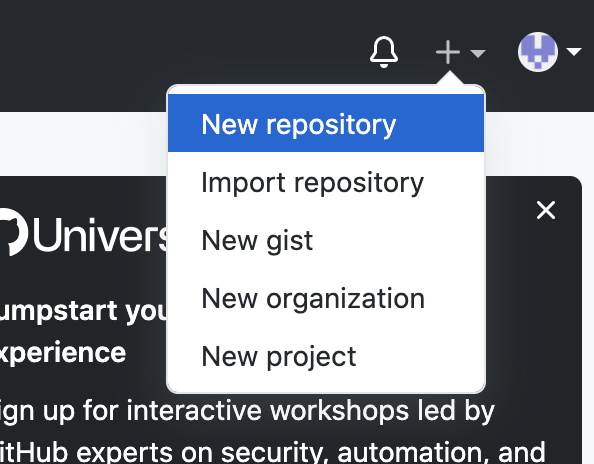
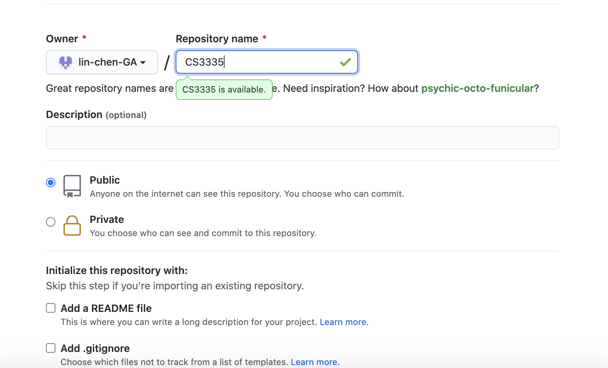
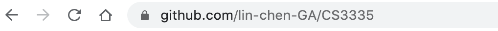

Github
Server Side
1. Create a github account
2. Create a repository


3. Get the URL of the repository

Local Side
4. Setup Git (if not done so)
- git config --global user.email "lichen@valdosta.edu"
- git config --global user.name "Lin Chen"
5. git clone URL, download the project folder from the repository
6. Copy the project files into the downloaded folder
7. git commit -am "Comments", make a commit
8. git push origin master
User Side
git clone URL
cmake
make
make test
make install